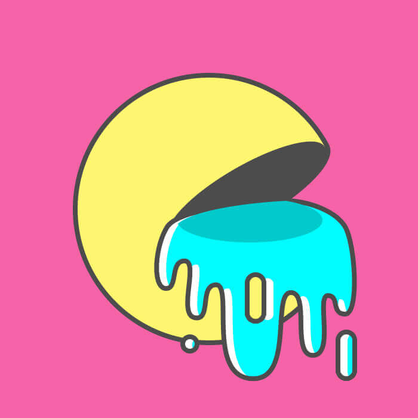
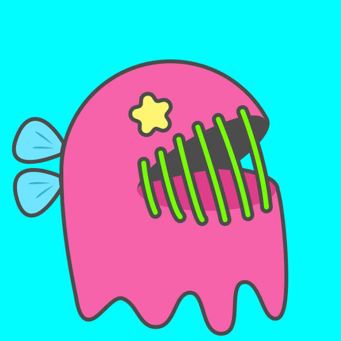
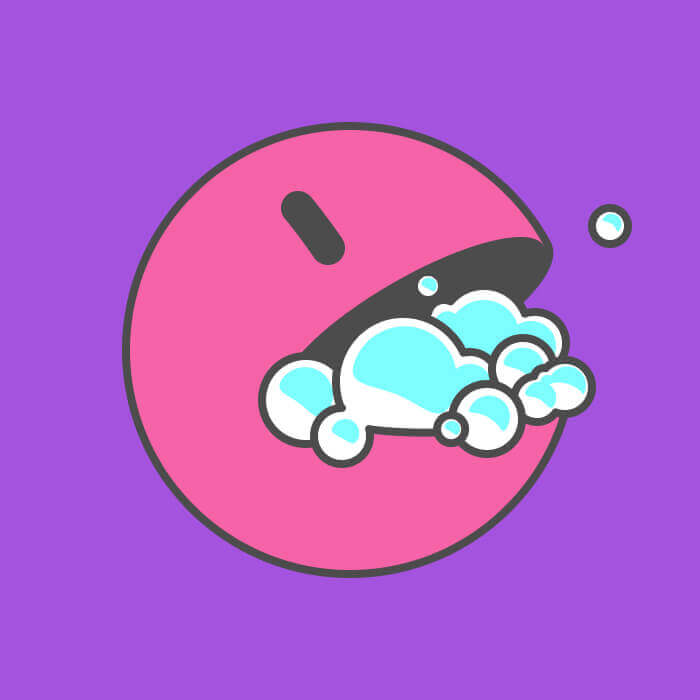
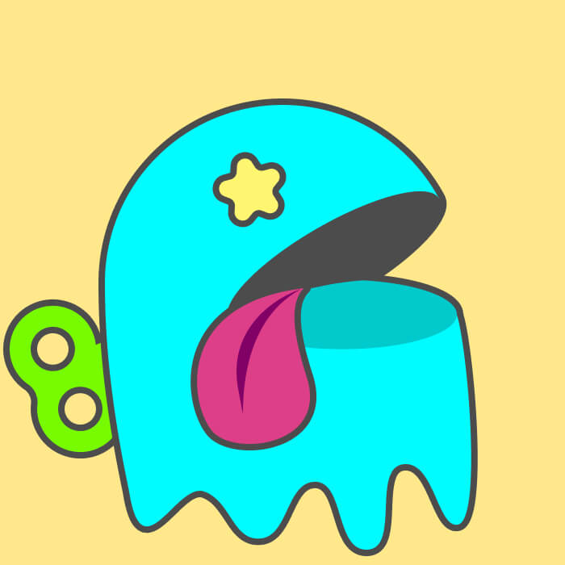
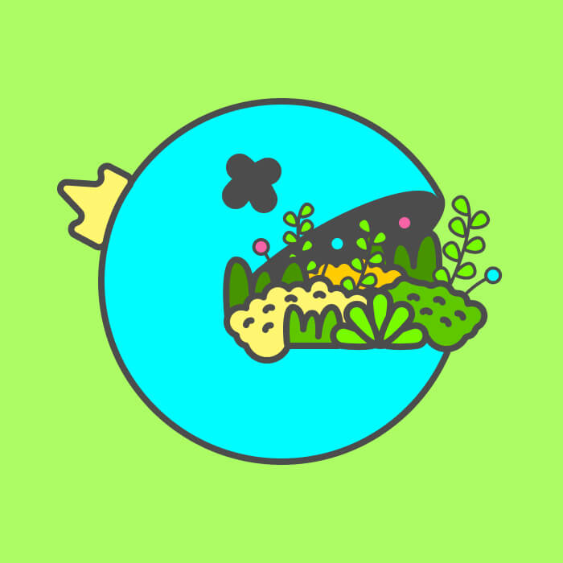
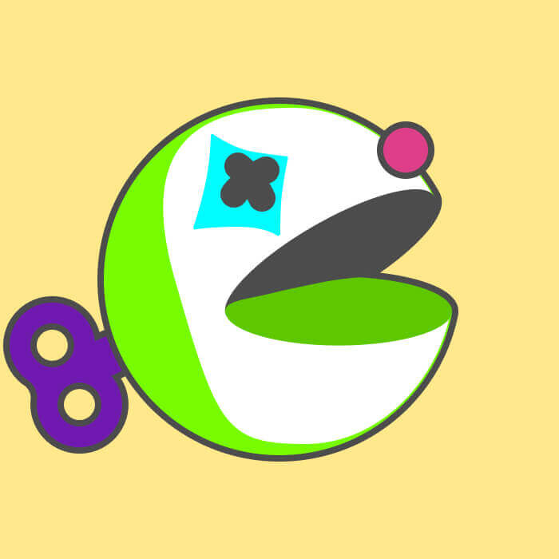

NFT Collection: PacFrens
I collaborated with a friend on this fun and experimental side project. Inspired by the success of $PacMoon, we set out to create a playful NFT collection called PacFrens.
Responsibilities
- Concepting
- Lead NFT artist
Tools
Procreate
Figma






Steps
- Designed the PacFrens characters entirely in Procreate, giving them a bold, approachable aesthetic.
- Used Figma to mock up variations and experiment with how they might be displayed on marketplaces.
- Explored rarity concepts (color swaps, accessories, poses) to add depth to the collectible idea.
- Created a simple website mockup for community engagement and marketing exploration.
🌟 Outcome
- ✅ Gained hands-on experience in **NFT art direction** and design pipelines
- 🎨 Built a fun, themed collection that captured our original creative intent
- 📚 Learned practical lessons about **Web3 marketing, community-building, and NFT launch cycles**
- 😊 Despite limited market traction, we truly enjoyed every step of the creative journey